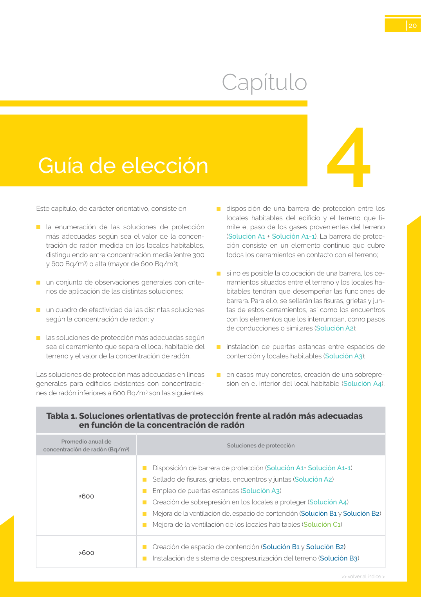
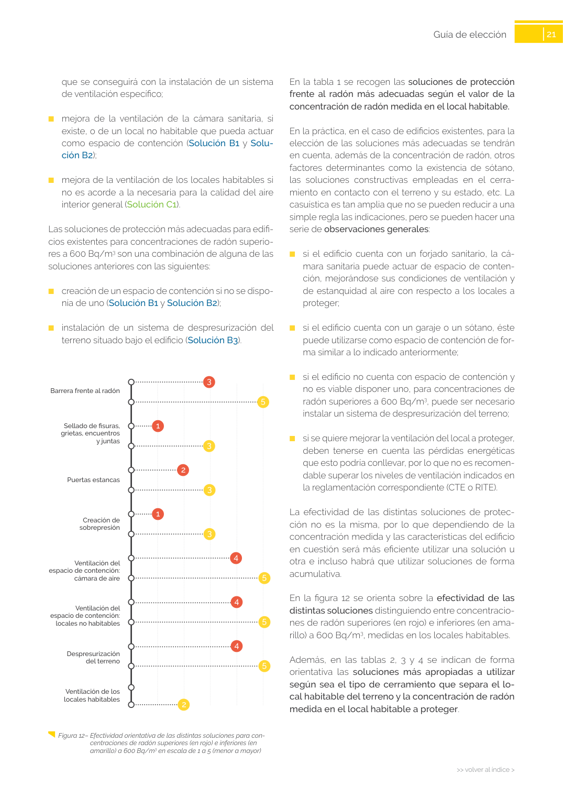
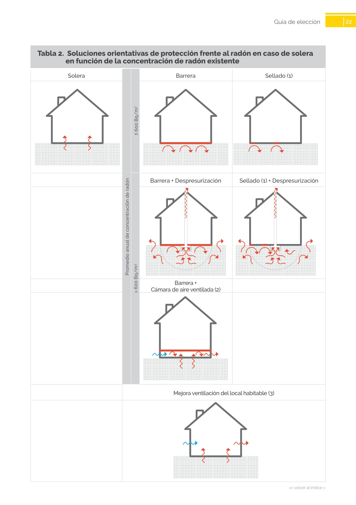

<!doctype html>
<html lang="es"><head><meta charset="utf-8">
<meta name="viewport" content="width=device-width, initial-scale=1">
<title>GUIA · Guía de elección</title><link rel="stylesheet" href="../estilo.css">
</head><body>
<nav><a href="../index.html">Índice</a> › <a href="../doc/guia-pdf-f3314b0414fe-sin-fecha-e58e54b822cf.html">GUIA</a> › a0055</nav>

<header class="meta">
<p><a href="../doc/guia-pdf-f3314b0414fe-sin-fecha-e58e54b822cf.html">GUIA</a> · Guía de elección · versión sin-fecha · capa guia</p>
</header>
<div class="cita"><strong>Cita:</strong> GUIA · ID técnico a0055 · Guía de elección · páginas físicas pág. 20-22 (impresas: ['20', '21', '22'])</div>
<p>Formatos: <a href="../../contenido/docs/GUIA-PDF-f3314b0414fe/sin-fecha__e58e54b822cf/apartado/a0055__guia-de-eleccion.json">JSON compacto</a> · <a href="../../contenido/docs/GUIA-PDF-f3314b0414fe/sin-fecha__e58e54b822cf/apartado/a0055__guia-de-eleccion.md">Markdown</a> · <a href="../../contenido/docs/GUIA-PDF-f3314b0414fe/sin-fecha__e58e54b822cf/fuente.pdf">PDF fuente</a></p>
<p><a href="../doc/guia-pdf-f3314b0414fe-sin-fecha-e58e54b822cf.html">Ámbito del documento</a> · <a href="../doc/guia-pdf-f3314b0414fe-sin-fecha-e58e54b822cf.html#ambito">texto del ámbito</a> ·
<a href="../doc/guia-pdf-f3314b0414fe-sin-fecha-e58e54b822cf.html">documento y tablas</a></p>
<nav><a href="guia-pdf-f3314b0414fe-sin-fecha-e58e54b822cf__a0054.html">← Capítulo</a> <a href="guia-pdf-f3314b0414fe-sin-fecha-e58e54b822cf__a0056.html">en función de la concentración de radón existente →</a></nav>
<h1>Guía de elección</h1>
<p>Tipo: referencias, tablas, figuras · nivel 1 · sección estimada: Guía de elección · padre: </p>
<pre class="literal">Guía de elección

21
&gt;&gt; volver al índice &gt;
&gt;&gt; volver al índice &gt;
Guía de elección
En la tabla 1 se recogen las soluciones de protección
frente al radón más adecuadas según el valor de la
concentración de radón medida en el local habitable.
En la práctica, en el caso de edificios existentes, para la
elección de las soluciones más adecuadas se tendrán
en cuenta, además de la concentración de radón, otros
factores determinantes como la existencia de sótano,
las soluciones constructivas empleadas en el cerra­
miento en contacto con el terreno y su estado, etc. La
casuística es tan amplia que no se pueden reducir a una
simple regla las indicaciones, pero se pueden hacer una
serie de observaciones generales:
■
si el edificio cuenta con un forjado sanitario, la cá­
mara sanitaria puede actuar de espacio de conten­
ción, mejorándose sus condiciones de ventilación y
de estanquidad al aire con respecto a los locales a
proteger;
■
si el edificio cuenta con un garaje o un sótano, éste
puede utilizarse como espacio de contención de for­
ma similar a lo indicado anteriormente;
■
si el edificio no cuenta con espacio de contención y
no es viable disponer uno, para concentraciones de
radón superiores a 600 Bq/m3, puede ser necesario
instalar un sistema de despresurización del terreno;
■
si se quiere mejorar la ventilación del local a proteger,
deben tenerse en cuenta las pérdidas energéticas
que esto podría conllevar, por lo que no es recomen­
dable superar los niveles de ventilación indicados en
la reglamentación correspondiente (CTE o RITE).
La efectividad de las distintas soluciones de protec­
ción no es la misma, por lo que dependiendo de la
concentración medida y las características del edificio
en cuestión será más eficiente utilizar una solución u
otra e incluso habrá que utilizar soluciones de forma
acumulativa.
En la figura 12 se orienta sobre la efectividad de las
distintas soluciones distinguiendo entre concentracio­
nes de radón superiores (en rojo) e inferiores (en ama­
rillo) a 600 Bq/m3, medidas en los locales habitables.
Además, en las tablas 2, 3 y 4 se indican de forma
orientativa las soluciones más apropiadas a utilizar
según sea el tipo de cerramiento que separa el lo­
cal habitable del terreno y la concentración de radón
medida en el local habitable a proteger.
que se conseguirá con la instalación de un sistema
de ventilación específico;
■
mejora de la ventilación de la cámara sanitaria, si
existe, o de un local no habitable que pueda actuar
como espacio de contención (Solución B1 y Solu­
ción B2);
■
mejora de la ventilación de los locales habitables si
no es acorde a la necesaria para la calidad del aire
interior general (Solución C1).
Las soluciones de protección más adecuadas para edifi­
cios existentes para concentraciones de radón superio­
res a 600 Bq/m3 son una combinación de alguna de las
soluciones anteriores con las siguientes:
■
creación de un espacio de contención si no se dispo­
nía de uno (Solución B1 y Solución B2);
■
instalación de un sistema de despresurización del
terreno situado bajo el edificio (Solución B3).
Figura 12– Efectividad orientativa de las distintas soluciones para con­
centraciones de radón superiores (en rojo) e inferiores (en
amarillo) a 600 Bq/m3 en escala de 1 a 5 (menor a mayor)
Barrera frente al radón
Sellado de fisuras,
grietas, encuentros
y juntas
Puertas estancas
Creación de
sobrepresión
Ventilación del
espacio de contención:
cámara de aire
Ventilación del
espacio de contención:
locales no habitables
Despresurización
del terreno
Ventilación de los
locales habitables

22
&gt;&gt; volver al índice &gt;
&gt;&gt; volver al índice &gt;
Guía de elección
Tabla 2.  Soluciones orientativas de protección frente al radón en caso de solera</pre>
<h2>Referencias detectadas</h2><ul><li>RITE</li></ul><h2>Tablas en estas páginas</h2><ul><li>p. 20 · <a href="../../contenido/docs/GUIA-PDF-f3314b0414fe/sin-fecha__e58e54b822cf/tabla/p0020_t01.json">p0020_t01.json</a> · <a href="../../contenido/docs/GUIA-PDF-f3314b0414fe/sin-fecha__e58e54b822cf/tabla/p0020_t01.csv">.csv</a></li><li>p. 20 · <a href="../../contenido/docs/GUIA-PDF-f3314b0414fe/sin-fecha__e58e54b822cf/tabla/p0020_t02.json">p0020_t02.json</a> · <a href="../../contenido/docs/GUIA-PDF-f3314b0414fe/sin-fecha__e58e54b822cf/tabla/p0020_t02.csv">.csv</a></li><li>p. 21 · <a href="../../contenido/docs/GUIA-PDF-f3314b0414fe/sin-fecha__e58e54b822cf/tabla/p0021_t01.json">p0021_t01.json</a> · <a href="../../contenido/docs/GUIA-PDF-f3314b0414fe/sin-fecha__e58e54b822cf/tabla/p0021_t01.csv">.csv</a></li><li>p. 22 · <a href="../../contenido/docs/GUIA-PDF-f3314b0414fe/sin-fecha__e58e54b822cf/tabla/p0022_t01.json">p0022_t01.json</a> · <a href="../../contenido/docs/GUIA-PDF-f3314b0414fe/sin-fecha__e58e54b822cf/tabla/p0022_t01.csv">.csv</a></li></ul><h2>Página visual</h2><figure><a href="../../contenido/docs/GUIA-PDF-f3314b0414fe/sin-fecha__e58e54b822cf/figura/p0020.png"></a><figcaption>Página visual 20 (fuente para fórmulas/tablas/figuras)</figcaption></figure><figure><a href="../../contenido/docs/GUIA-PDF-f3314b0414fe/sin-fecha__e58e54b822cf/figura/p0021.png"></a><figcaption>Página visual 21 (fuente para fórmulas/tablas/figuras)</figcaption></figure><figure><a href="../../contenido/docs/GUIA-PDF-f3314b0414fe/sin-fecha__e58e54b822cf/figura/p0022.png"></a><figcaption>Página visual 22 (fuente para fórmulas/tablas/figuras)</figcaption></figure><p class="aviso">PDF fuente redistribuible: copia fiel enlazada en esta página (SHA256 verificado).</p>
<footer>Generado estáticamente desde JSON normalizado; sin JavaScript ni servicios externos.
El JSON es la fuente; este HTML es caché reproducible.</footer>
</body></html>
